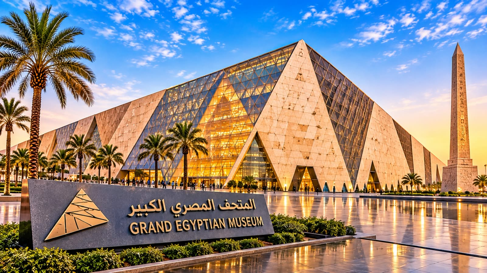
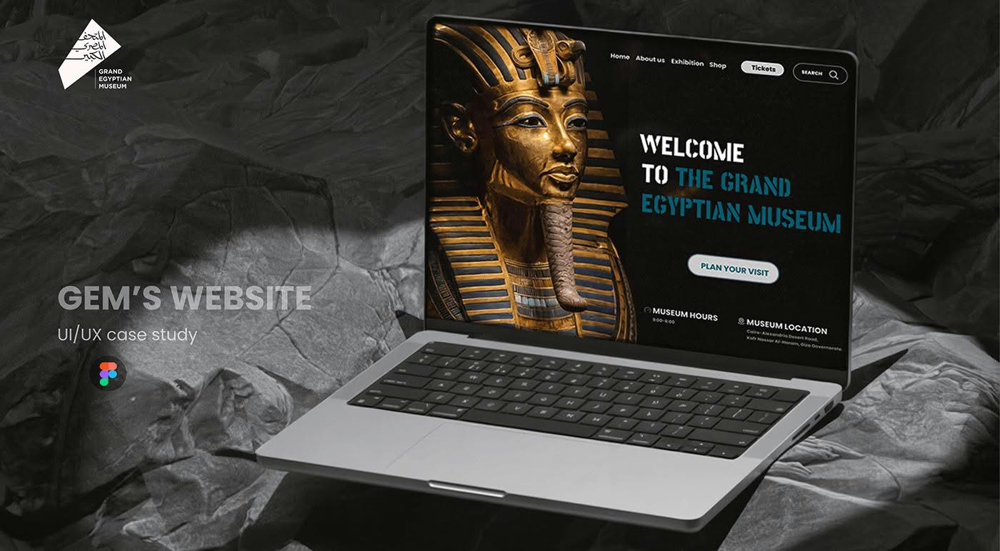
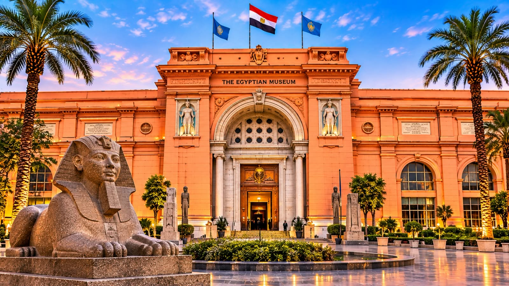
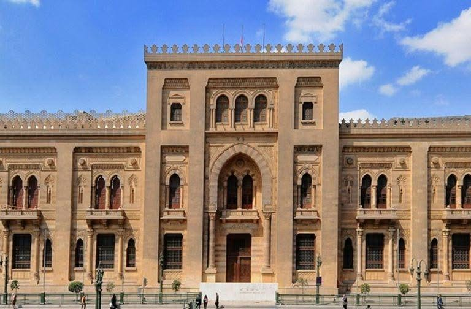

اكتشف عالم الحضارات والتاريخ والفنون من خلال المتاحف الرقمية، واستمتع برحلة معرفية بين أهم الآثار والمقتنيات التاريخية.
اكتشف المتاحفتُعد المتاحف الرقمية من أهم مصادر المعرفة والثقافة في العصر الحديث، حيث تتيح للزوار فرصة استكشاف الآثار والمقتنيات التاريخية والفنية عبر الإنترنت، دون الحاجة إلى زيارة المتحف بشكل فعلي، مما يساعد على نشر الثقافة والحفاظ على التراث الإنساني.

يضم مجموعة متميزة من الآثار المصرية القديمة، ويتيح التعرف على تاريخ الحضارة المصرية العريقة.
زيارة المتحف
يضم آلاف القطع الأثرية التي توضح جوانب مختلفة من تاريخ مصر القديمة.
زيارة المتحف

نقدم لكم تجربة رقمية مميزة للتعرف على المتاحف والمعالم الأثرية، من خلال موقعنا الذي يتيح استكشاف المعلومات والصور الخاصة بالمقتنيات التاريخية والحضارية.
الدخول إلى موقع المتاحف ↗